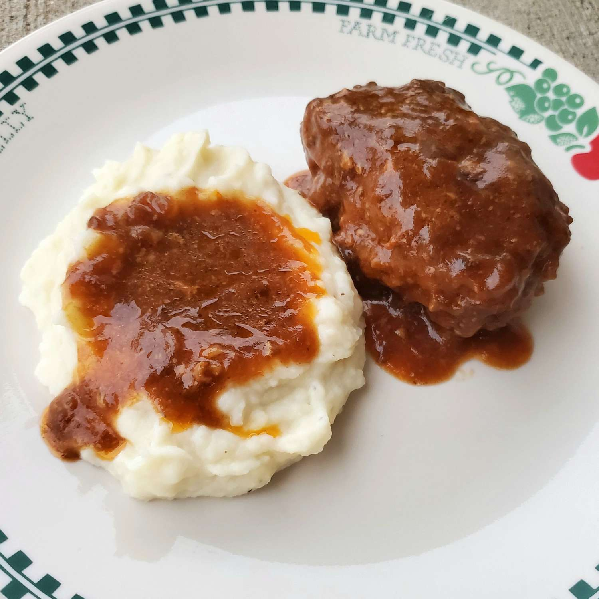

Salisbury Steak

Description
Salisbury steaks with a savory onion sauce. This yummy recipe has been in my family for years. It's easy to cook but tastes like it took hours to make! I usually make enough extra sauce to pour over mashed potatoes.
Ingredients
- 1 ½ pounds ground beef
- 1 (10.5 ounce) can condensed French onion soup
- ½ cup dry bread crumbs
- 1 egg
- ¼ teaspoon salt
- ⅛ teaspoon ground black pepper
- 1 tablespoon all-purpose flour
- ¼ cup ketchup
- ¼ cup water
- 1 tablespoon Worcestershire sauce
- ½ teaspoon mustard powder
Steps
- Combine ground beef, 1/3 cup condensed soup, bread crumbs, egg, salt, and black pepper in a large bowl. Shape into 6 oval patties.
- Heat a large skillet over medium-high heat; add patties and brown on both sides. Drain excess fat.
- Blend remaining soup and flour together in a small bowl until smooth; mix in ketchup, water, Worcestershire sauce, and mustard. Pour soup mixture over patties in the skillet. Cover, and cook for 20 minutes, stirring occasionally.